Desafio: Comece um programa de exercícios aeróbicos
Iniciar e manter um programa de exercícios é um hábito importante para ajudar a reduzir o risco de doenças
cardíacas. O plano de aprendizado desta semana vai te ajudar a iniciar um programa, mesmo que você nunca
tenha sido ativo antes. Comece com uma pequena quantidade de exercício e aumente sua atividade ao longo
do tempo.
Ao final deste plano de aprendizado, você saberá:
- O que é exercício aeróbico
- Como planejar os exercícios
- Os benefícios do exercício aeróbico
1. Pense e reflita sobre o plano da semana passada, e responda as perguntas abaixo
2. Assista ao vídeo THRiVE:
Clique na imagem abaixo para assistir ao vídeo.
3. Planeje a sua semana e preencha as perguntas abaixo
4. Leia o material abaixo e aprenda um pouco mais sobre exercício aeróbico
Mantendo-se ativo para um coração saudável


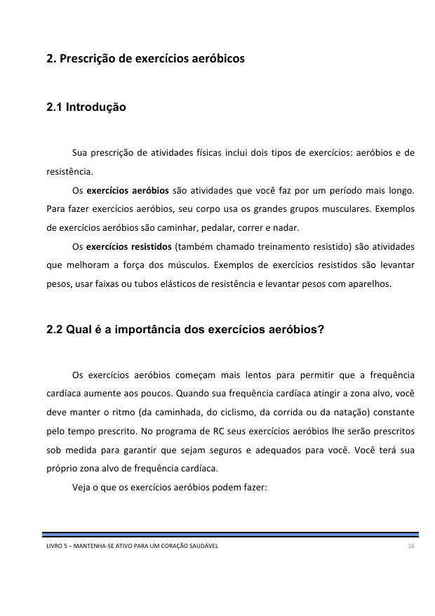
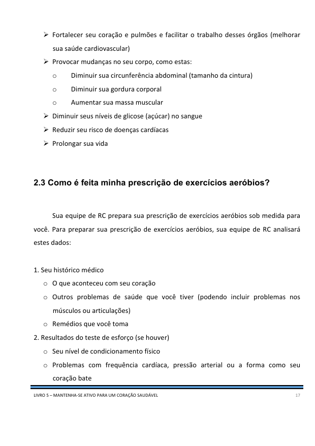
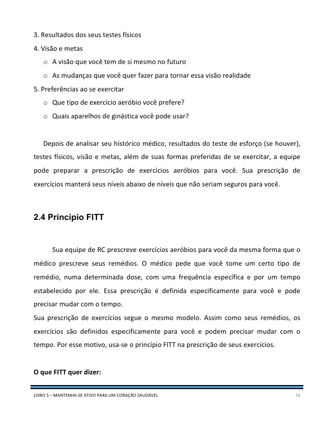
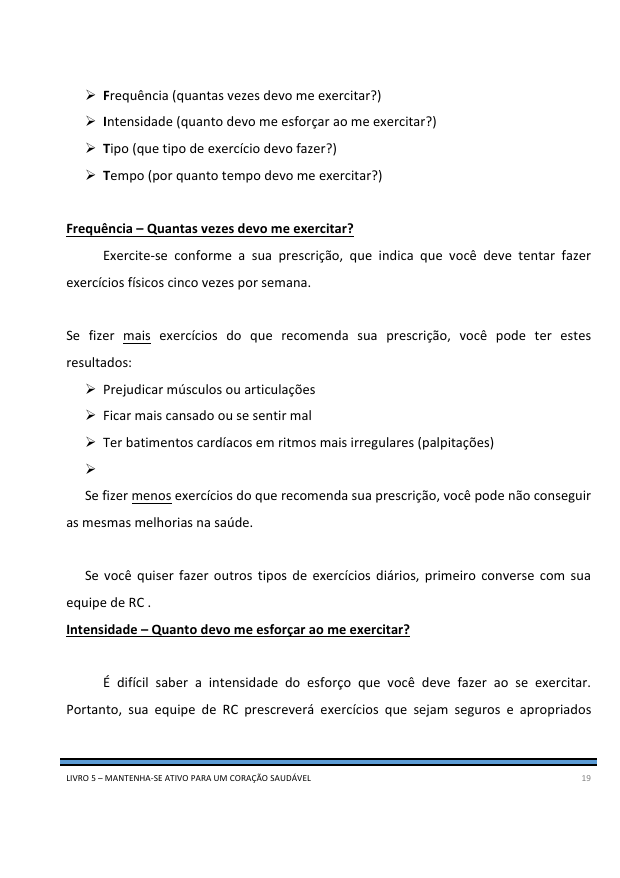
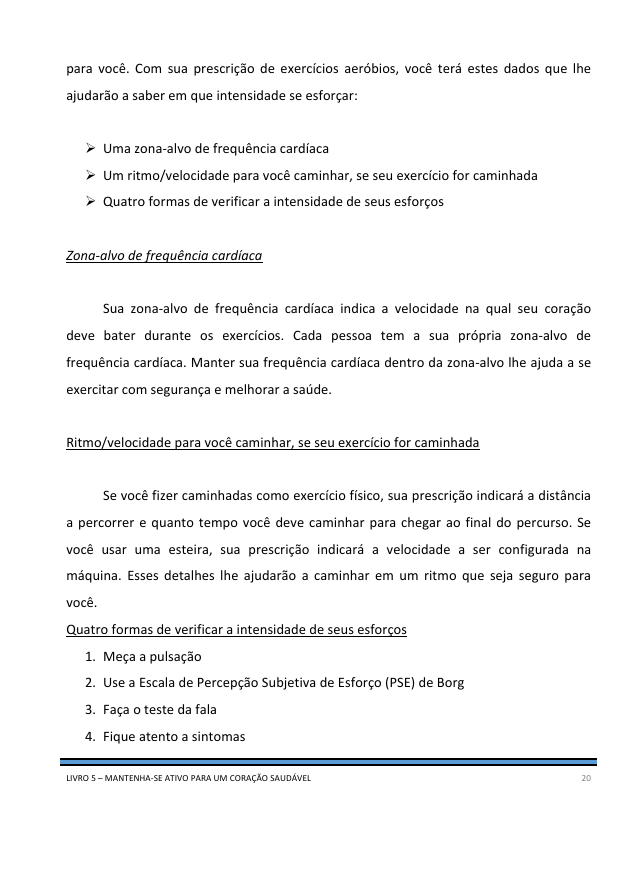

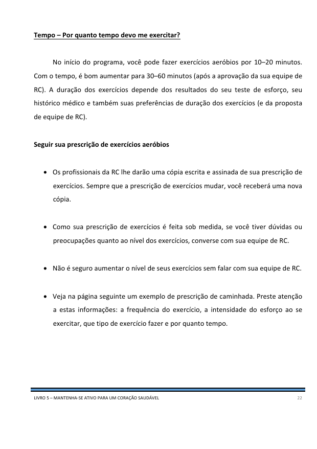
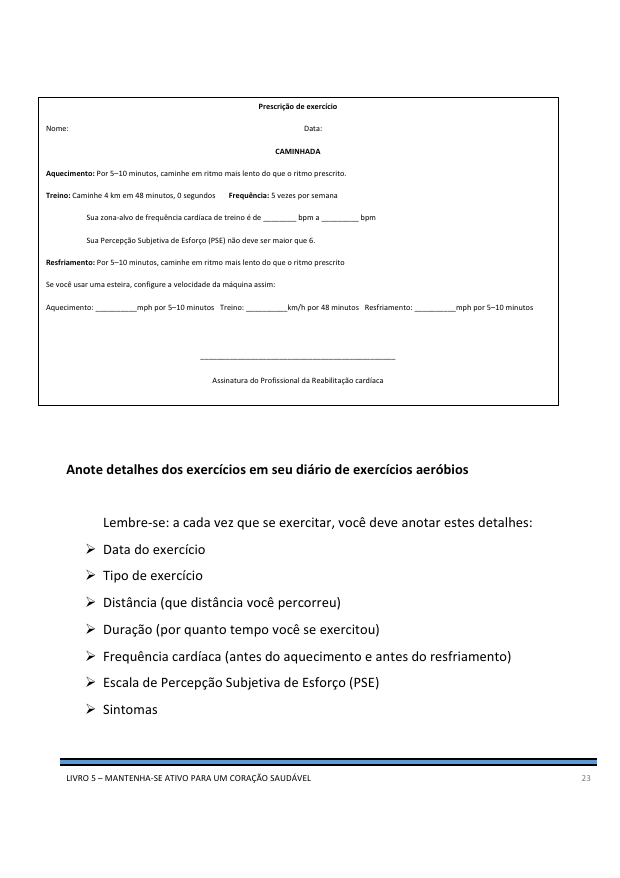
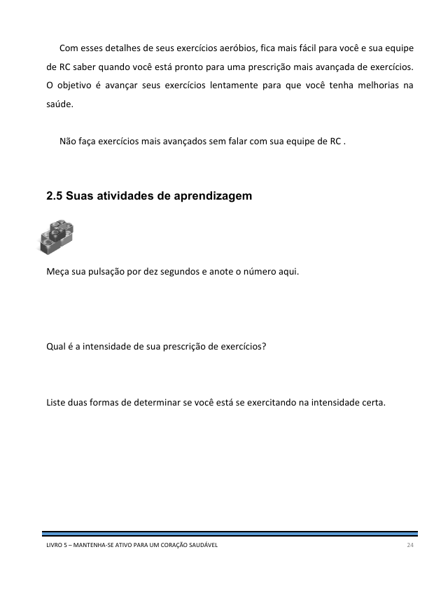
Leia o material abaixo e aprenda um pouco mais sobre como controlar os seus sintomas
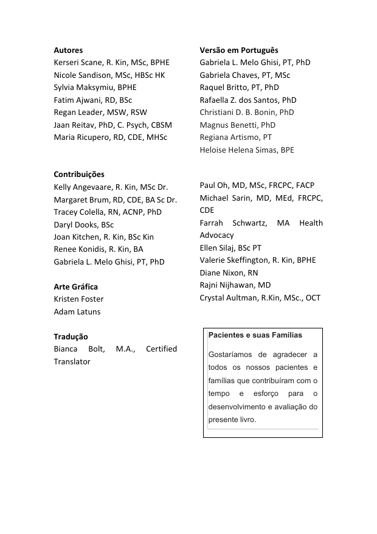
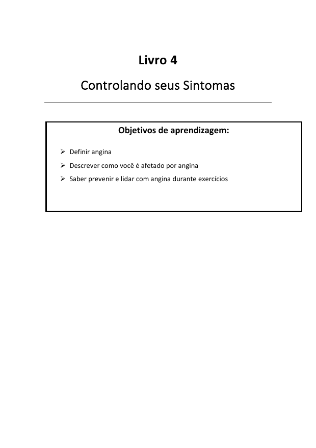
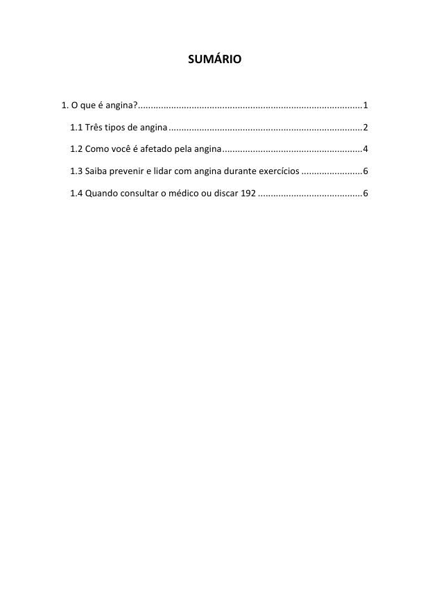
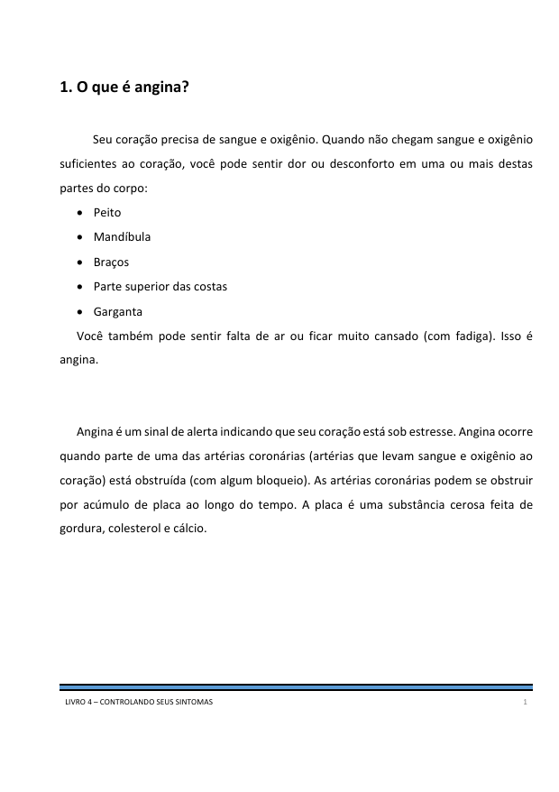
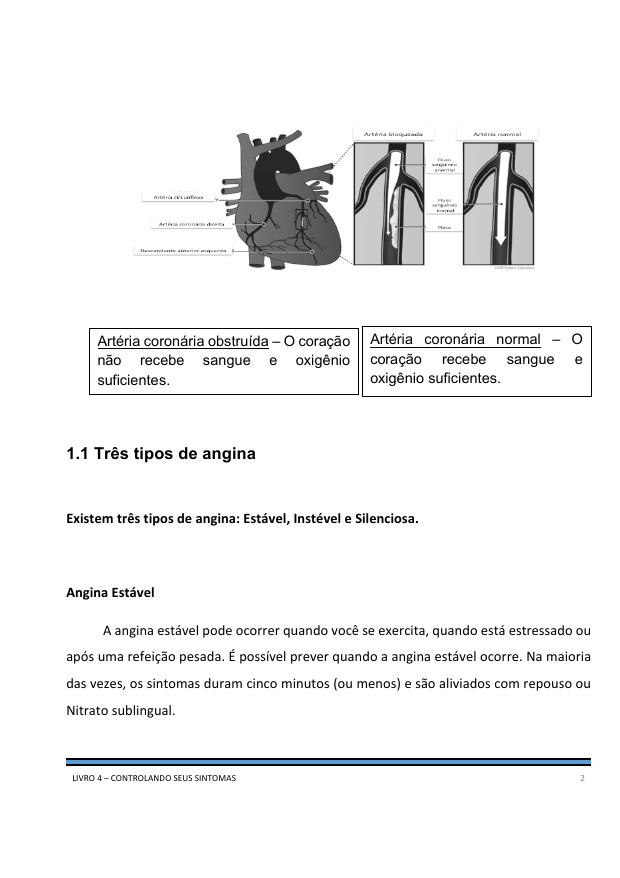
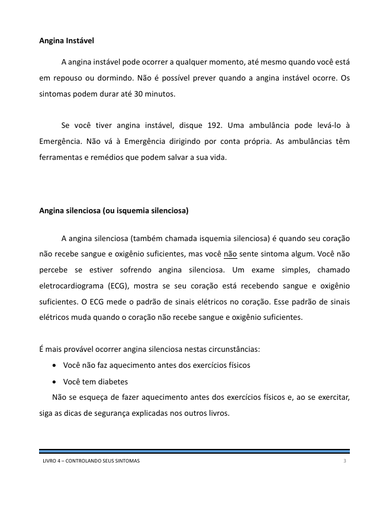
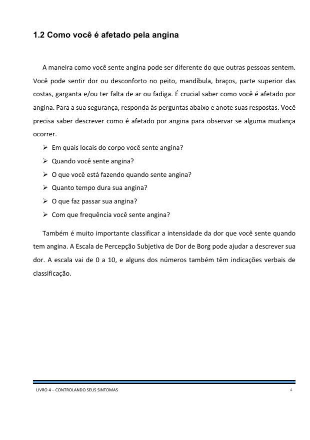
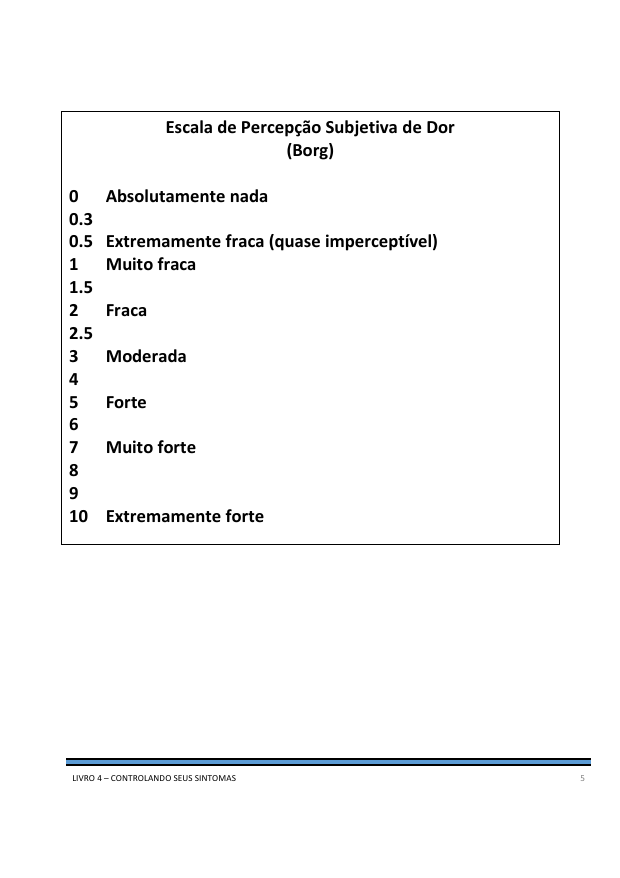
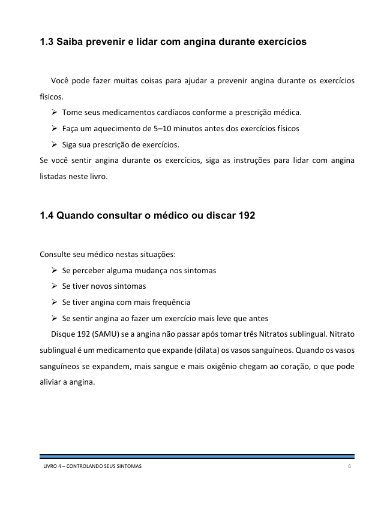
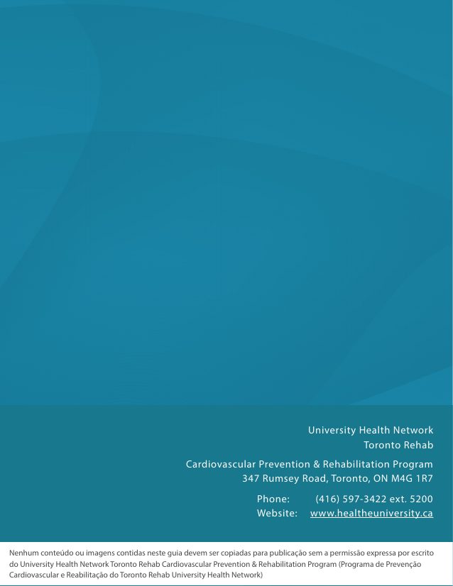